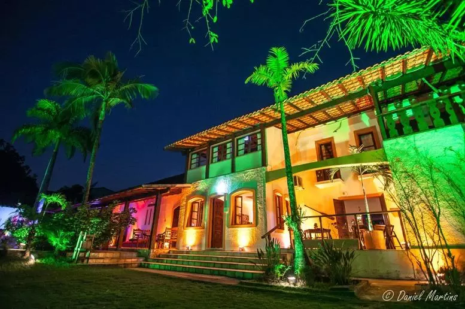
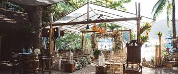
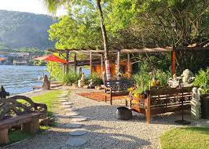
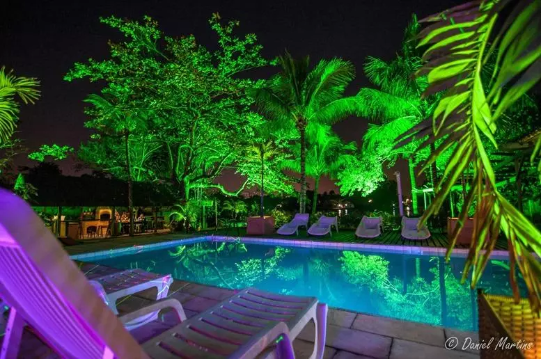
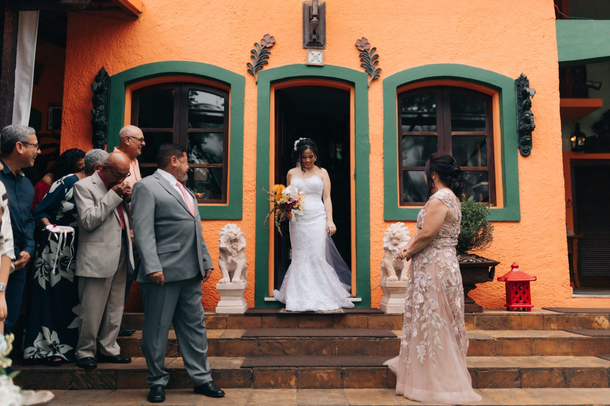
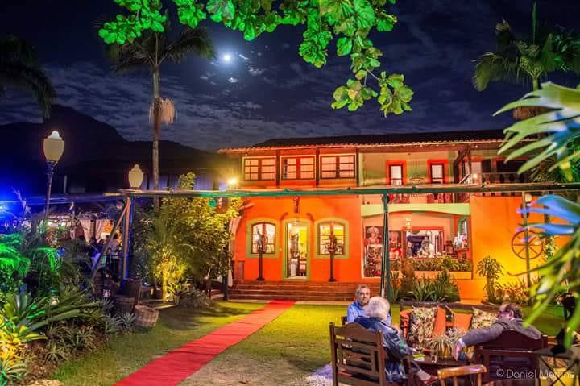
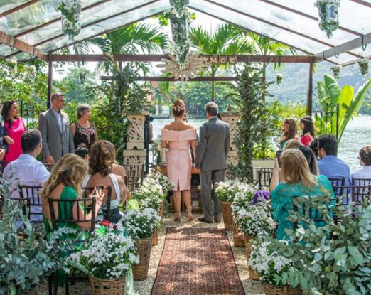

Solar das Palmeiras Rio
Arquitetura colonial, amplos jardins e produção personalizada para transformar sua festa em uma memória marcante.









Sobre o Espaço
O Solar das Palmeiras Rio é um dos espaços de eventos mais sofisticados da Ilha da Gigóia. O local mistura arquitetura de inspiração colonial com jardins e áreas abertas cercadas pela natureza da lagoa. Ali, cada evento é pensado como uma experiência completa, em um ambiente cuidadosamente decorado.
O espaço é conhecido por sua gastronomia elaborada e produção de eventos personalizados, com cenografia e menus exclusivos. Em ocasiões como festas de Réveillon, o local se torna um dos pontos mais desejados para celebrar com vista privilegiada para os fogos da Barra da Tijuca.
Destaques
- ✓ Arquitetura colonial e jardins
- ✓ Gastronomia elaborada
- ✓ Produção e cenografia personalizadas
- ✓ Integração total com a natureza
Orçamento
🗓️ Sob Consulta
Ideal Para
Casamentos, festas de 15 anos, grandes eventos corporativos e celebrações exclusivas.
Fale direto com a equipe de produção para desenhar o seu evento exclusivo.